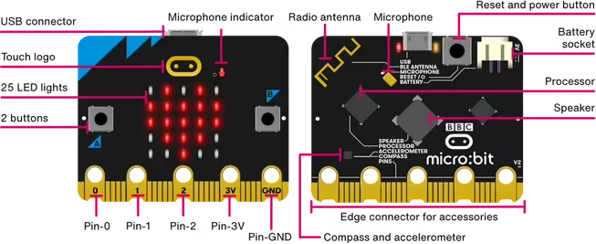
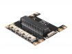

野田中学校 3年 技術科
アイデアを、
技術の力で再発明しよう。
これまで学んだ知識をすべて組み合わせ、
世の中で役立つアイデアを形にしよう。
再発明の材料を探す
S👀調べる
まわりの様子を
センサで知る
→
C🧠判断する
micro:bitが
どうするか考える
→
A⚙️動かす
光・音・動きで
できごとを起こす
📚 これまでの学びを総動員→💡 アイデアを技術で形に→🌏 世の中で役立つ「再発明」へ
DEVICE LIBRARY
できることから、部品を見つけよう
カードを選ぶと、必要なもの・つなぎ方・使うブロックが分かります。
🔎見つかりませんでした
「水」「音」「動く」など、短いことばで探してみよう。
C = COMPUTER
判断する中心は
micro:bit
センサから情報を受け取り、「もし○○なら」と考えて、次の動きを決めます。
ボタンタッチロゴ明るさ温度マイク加速度コンパス

本体の表と裏に、調べる機能・知らせる機能が入っています。
011個ならP0から
外付け機器を1個だけ使うときは、基本的にP0から使います。
P0人感センサ
02同じポートは使わない
複数の機器は、P0・P1・P2の空いている場所へ分けます。
P0人感P1サーボ
03線とプログラムをそろえる
線をP1へつないだら、MakeCodeのブロックもP1へ変えます。
🔌 P1=🧩 P1
📣線をつないだ場所と、MakeCodeのポート番号をそろえよう！ここが違うと、正しいプログラムでも動きません。

micro:bit用 Grove ShieldGROVE SHIELDって何？
端子を増やして、Grove部品を簡単につなぐ道具
➕ つなげる端子が増える複数のセンサやアクチュエータを使いやすくなります。
🔌 Grove形状なら挿すだけ同じ形のコネクタなので、向きを確かめてケーブルを挿せます。
カードに「🔌 Shield必要」とあったら、micro:bitにGrove Shieldを取り付けよう。
MAKECODE FIRST GUIDE
ブロックは「名前」で見つけよう
色だけでなく、カテゴリーとブロック名まで確認します。
細かく変わる数字アナログ入力
土の湿り具合などを数字で読みます。
高度なブロック → 入出力端子アナログ値を読み取る P0
0か1デジタル入力
人がいる／いないなどを読みます。
高度なブロック → 入出力端子デジタル値を読み取る P0
強さを変える数字アナログ出力
振動モータなどの強さを数字で変えます。
高度なブロック → 入出力端子アナログで出力する P0 値 0〜1023
ONかOFFデジタル出力
ポンプなどに動く／止まるを命令します。
高度なブロック → 入出力端子デジタルで出力する P0 値 1
🧩拡張機能って何？MakeCodeに新しい専用ブロックを追加する仕組み
- MakeCodeを開く
- 「拡張機能」を選ぶ
- 名前またはURLで検索
- 見つかった拡張機能を選ぶ
- 新しいカテゴリーが追加されたら完了
IDEA BUILDER
3つを選んで、作品を組み立てよう
選ぶと、必要な部品とポートの使い方が自動で分かります。
AI + REAL WORLD
AIの「見つけた！」を、実物の動きへ
Teachable Machineで画像・音・ポーズを覚えさせ、micro:bitや部品へつなげます。
📷 画像認識
猫、人、ペットボトル、水皿など
🎤 音認識
拍手、声、特定の音など
🧍 ポーズ認識
手を上げる、立つ、しゃがむなど
ルート AStretch3でつなぐ
Teachable
Machine→Stretch3→micro:bit
More→micro:bit→実物
ルート BMake: AI Robotsでつなぐ
Teachable
Machine→モデルを
書き出す→Make: AI
Robots→micro:bit→実物
Make: AI Robotsを開く
Stretch3だけでもAI作品は作れます。ただし今回の再発明では、できるだけmicro:bitやセンサ、モータなど実物の装置も動かしてみましょう。